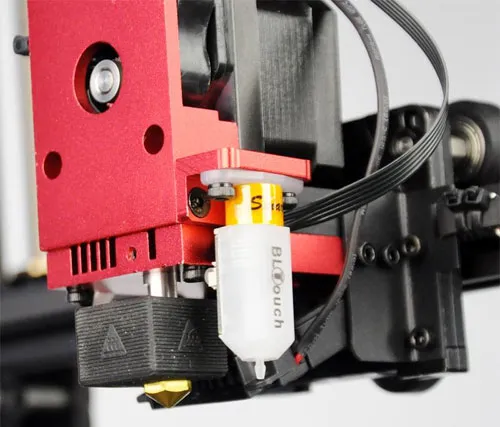

Wanhao D9 MK1 with the MK2 upgrade kit
A first-generation D9 fitted with Wanhao's MK2 upgrade kit: the MK1 frame, with a BLTouch probe instead of the metal inductive one.
Wanhao shipped a separate firmware for this combination, because the kit's BLTouch does not sit where the factory MK2's does: the probe's Y offset differs. These builds use the kit's geometry. The Y motor sits at the back.

Download
| Size | Build volume | Firmware |
|---|---|---|
| D9/300 | 300 × 300 × 400 mm | D9_MK1u2_300.hex |
| D9/400 | 400 × 400 × 400 mm | D9_MK1u2_400.hex |
| D9/500 | 500 × 500 × 500 mm | D9_MK1u2_500.hex |
Take the file for your size, then flash the screen with DGUS Reloaded.
These builds use the kit firmware's probe offset, Y −10. It is the only line where Wanhao's kit
source differs from the factory MK2's (Y 0): the kit's BLTouch sits further back. If your bed mesh looks shifted front
to back, measure your own offset with the offset guide.
Wanhao's original firmwares
Wanhao's V1.1.31 kit firmware (December 2018), used with the MK2 screen firmware.
| Size | Motherboard | Screen |
|---|---|---|
| D9/300 | D9-300-BLTOUCH-FD_V1.1.31.hex | DWIN_SET_MK2.zip |
| D9/400 | D9-400-BLTOUCH-FD_V1.1.31.hex | DWIN_SET_MK2.zip |
| D9/500 | D9-500-BLTOUCH-FD_V1.1.31.hex | DWIN_SET_MK2.zip |
Settings read out of Wanhao's binaries: extract.md.